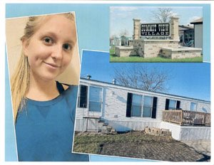

Own your home when you're 30? Here's how.
May 03 2021
How many 30 year olds can say they own their home outright? When Gabrielle is 30, she’ll be one of them!

Gabrielle is 20 years old and works as a preschool teacher in North Liberty. Looking recently for a place to live, a Summit View manufactured home community resident suggested she buy her own manufactured or mobile home. Gabrielle lived in Summit View in Cedar Rapids as a child, and already loved the community. She has happy memories of playing outdoors with other kids and feels safe in Summit View.
Gabrielle filled out an online financing application at www.hameshomes.com/financing. Hames sales person Clint Aldeman called her back quickly and said that with a 10% down payment, her best option is a 10 year fixed-rate loan with Hames’ in-house financing company[I]. Clint explained that her loan payment plus home site rent would be at, or lower, than Cedar Rapids’ average $750 monthly 2-bedroom apartment cost.
Clint and Gabrielle toured manufactured homes for sale that fit her lifestyle and budget. The sales process was “super smooth,” she reflects. She selected a two bedroom, two bathroom fully-refurbished manufactured home with almost 1100 square feet of living space. “I’m able to own my own home. I have control over my space. I don’t have to wait for a landlord to come and fix something,” Gabrielle explains.
And it’s still a wonderful place to live. Gabrielle adds, “Neighbors helping neighbors really came out during the [August 10 derecho] storm. I know I can reach out to neighbors if needed, and they can get hold of me, too.”
Now Gabrielle has lots of room, her own yard, and a small mortgage. Best of all, she’ll own her home when she’s 30 years old!